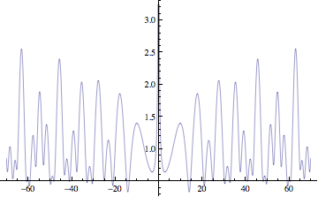

Math 55b: Honors Real and Complex Analysis
10-11:30 Tu Th / Science Center 216
Harvard University - Spring 2010

 Instructor:
Curtis T McMullen
Texts:
Instructor:
Curtis T McMullen
Texts:
- Required: Rudin, Principles of Mathematical Analysis, McGraw-Hill, 1976.
- Required: Marsden and Hoffman, Basic Complex Analysis, Freeman, 1999.
- Recommended: Stein and Shakarchi, Fourier Analysis, an Introduction, Princeton University Press, 2003.
- Also useful: Stein and Shakarchi, Complex Analysis , Princeton University Press, 2003.
- Also useful: Bott and Tu, Differential Forms in Algebraic Topology , Springer, 1982. See especially 1.1-1.3.
- Also useful: H. M. Schey, Div, Grad Curl and All That , Norton, 2005.
- Also useful: Hubbard and Hubbard, Vector Calculus, Linear Algebra and Differential Forms, Prentice Hall 1999.
- Also useful: T. Needham, Visual Complex Analysis , Oxford University Press, 1997.
Prerequisites:
Commitment to a demanding course, strong interest in mathematics,
and familiarity with proofs and abstract reasoning.
Qualified students from Math 25a are welcome to 55b; please consult with
the instructor after completing the first few homeworks.
Topics.
This course will provide a rigorous introduction to
real and complex analysis.
This course covers the equivalent of Math 25b and 113, and prepares
students for Math 114 and other advanced courses in analysis.
Reading and Lectures.
Students are responsible for all topics covered in
the readings and lectures.
Assigned material should be read before
coming to class. Lectures may go beyond the
reading, and not every topic in the reading will be
covered in class.
Absorbing new or additional topics through independent study is an important
part of the course.
Homework.
Homework will be assigned every week.
It is due at the beginning of class.
Late homework will not be accepted.
Collaboration between students is encouraged, but you must write your own solutions, understand them and give credit to your collaborators.
Please use only the texts and your course notes for homework.
Midterms.
There will be one in-class, one hour midterm.
Final.
There will be a take-home final exam, to be completed
during reading period.
Grades.
Grades will be based on homework (40%), the in-class midterm (20%) and the
take-home final (40%).
Calendar 2009-10.
- Tu, 26 Jan. First class
- M-F, 15-19 Mar. Spring Break
- Tu, 27 Apr. Last class
- Th-Th, 29 Apr - 6 May. Reading period